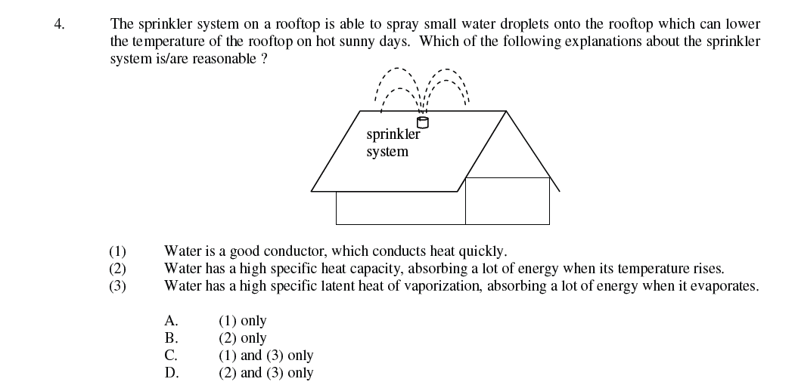

Evaporation from a wet surface

Section 3.3
Specific latent heat connects the energy transferred during a phase change to the mass that changes state.
Specific latent heat is the energy absorbed or released per kilogram of a material during a change of state.
\(E\): energy (J); \(m\): mass that changes state (kg); \(\ell\): specific latent heat (J kg⁻¹). Use \(\ell_f\) for fusion and \(\ell_v\) for vaporization.
| Water phase change | Specific latent heat | At |
|---|---|---|
| Fusion | 334 kJ kg⁻¹ | 0 °C |
| Vaporization | 2260 kJ kg⁻¹ | 100 °C |
Half a kilogram of ice at 0 °C melts. Which mass belongs in \(E=m\ell_f\)?
C. The formula uses only the mass undergoing the phase change.
For melting ice, keep it at 0 °C and compare a heated setup with a control to estimate heat gained from the surroundings. For boiling water, measure electrical energy and mass lost while steady boiling continues.
A vaporization experiment counts electrical energy that escapes to the room. What happens to the calculated specific latent heat if the lost energy is mistakenly counted as heating the water?
B. The energy numerator is overestimated while the measured vaporized mass is unchanged.
Water has a large specific latent heat of vaporization. Evaporating a small mass can remove substantial energy, so evaporation cools wet skin and hot water. Sweat helps the body lose energy when it evaporates.
Why does sweat cool the body only when it evaporates?
Evaporation requires energy to separate molecules. The escaping sweat takes that energy from the skin and nearby tissue, lowering their average kinetic energy.
When temperature and state both change, calculate each stage separately. Add heating within a phase \((E=mc\Delta T)\) and phase changes \((E=m\ell)\). Keep the same mass unless some material leaves the system.
A sample starts as ice below 0 °C and ends as liquid water above 0 °C. Which energy terms are needed?
D. The sample undergoes two temperature changes and one phase change.